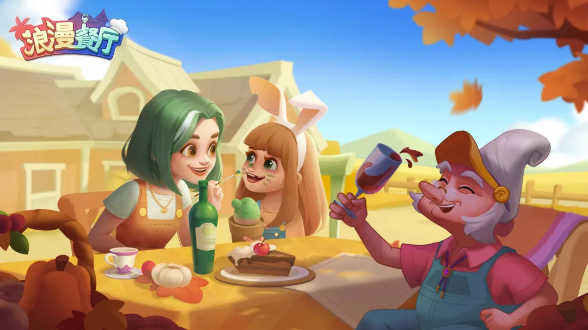
深度体验 × 运营拆解 × 出海发行运营方案
一句话结论：《浪漫餐厅》的成功不是合成玩法创新，而是把"短剧式叙事"当成核心钩子装进成熟 Merge-2 玩法，精准击中欧美女性用户的情绪需求；它当前最大的运营命题，是"内容产能 + 情绪营销"的持续供给能力。
核心发现：
《浪漫餐厅》海外定名 Gossip Harbor，是柠檬微趣研发的剧情驱动型 Merge-2（二合）休闲手游，2022 年 7 月上线海外。它不靠合成难度留人：核心驱动力是都市情感 + 悬疑探案的"狗血短剧"叙事，合成只是解锁剧情、装修餐厅的工具。开局剧情为女主凯莉（英文名 Quinn）离婚带女儿归来经营餐厅、遭遇投毒案，一边经营一边追查真相（澎湃新闻，2025-06；女主名以游戏内中文译名为准）。
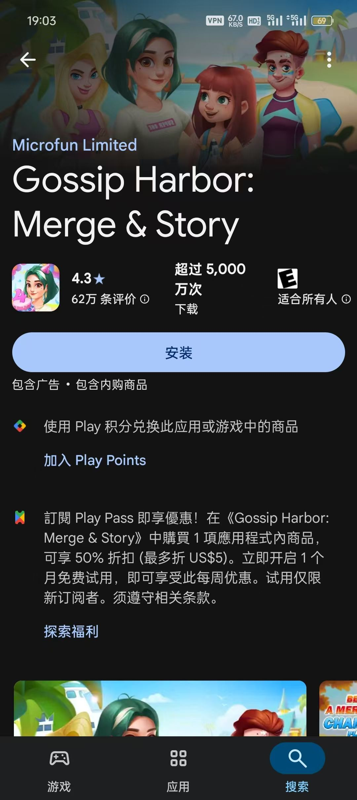
2025 年上半年，Merge-2 全球市场收入总流水超 6.8 亿美元，同比 +94%；下载量同比 +32%（AppMagic）。在休闲益智大类（内购流水 87 亿美元）中，三消、Merge-2、点消三大子类里 Merge-2 是唯一收入未下滑、仍在大幅增长的子类。
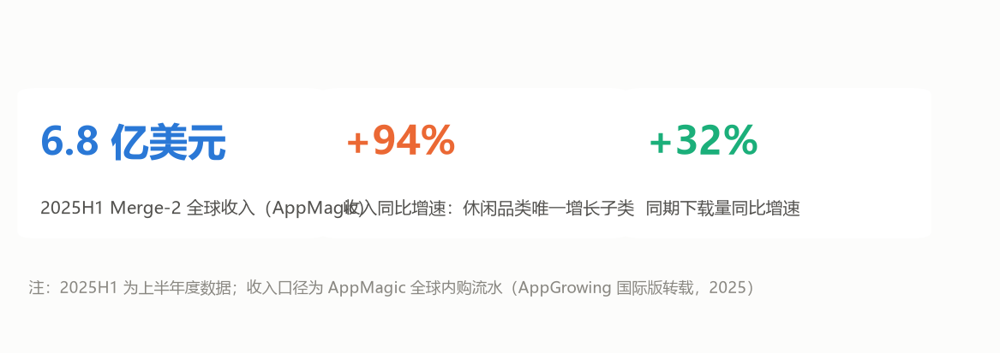
2025 全年，9 款中国出海合成产品年流水过亿人民币；合成品类流水 Top 20 中 12 款来自中国厂商（60%）；玩法格局上 Merge-2 上榜 12 款，首次超过 Merge-3（8 款）（白鲸出海/36 氪年度榜单，2026-02）。
头部集中度显著：柠檬微趣集团 2025 年收入规模约 5.4 亿美元（虎嗅 2026-02；注：该数字为集团全产品口径，包含 Gossip Harbor、Seaside Escape 等多款合成产品，与单产品海外收入不可直接对比），居 Merge-2 全球厂商榜首。
海外主市场：北美、欧洲，女性向短剧式买量打法。2025 年小游戏投放素材中，柠檬微趣有超过 1 万组涉及短剧元素，通过 TikTok、Facebook 高频素材迭代提升转化率（澎湃新闻，2025-06）。
发行成绩：2025 年 3 月出海收入榜第 3（仅次于《Whiteout Survival》《PUBG MOBILE》）；5 月首夺亚军；2025 全年出海收入榜第 2、同比 +242%（Sensor Tower 月报）。2024 年单产品海外内购据媒体引述已超过《原神》同期海外内购（澎湃新闻 2025-06；注：此为二手转述，未附 Sensor Tower / AppMagic 三方对照，引用时建议在脚注中明确"按 Sensor Tower 海外内购口径"的限定条件）。
国内并行：国服版《浪漫餐厅》及微信小游戏端 2024 年上线，2025 年 3 月进入微信小游戏消耗增长榜第 10（DataEye）。国服做剧情尺度本地化裁剪，但出海仍是主战场，本报告以海外运营为主线。
| 产品 | 厂商 | 题材定位 | 2025 年公开表现 | 对我们的启示 |
|---|---|---|---|---|
| Gossip Harbor | 柠檬微趣 | 都市情感 + 悬疑剧情 | 出海收入榜第 2，+242%；海外月收入约 4240 万美元（2025-05，Sensor Tower） | 叙事驱动的品类标杆 |
| Merge Mansion | Metacore | 庄园解谜剧情 | 头部爆款流水开始下滑（白鲸出海，2026-02） | 老牌产品叙事疲劳，后来者仍有窗口 |
| Travel Town | Magmatic | 环球旅行经营 | 品类老牌头部（2025 月流水数据未在公开三方报告中获得明确披露，建议查询 Sensor Tower 单产品页补全） | 玩法先行，剧情偏弱 |
| Seaside Escape | 柠檬微趣 | 同厂剧情合成 | 月流水超 1600 万美元（2025-05） | 同厂矩阵复制，验证方法论可复用 |
| Tasty Travels | 点点互动 | 环球美食旅行 | 累计营收超 1.61 亿美元，月流水约 2000 万美元 | 题材差异化 + 副玩法填空窗期 |
市场层面三大优势：
市场层面三大风险：
| 维度 | 数据 | 来源 |
|---|---|---|
| 性别 | 女性占比超 60%（部分口径 79%） | Sensor Tower 引述；澎湃新闻 2025-06 |
| 年龄 | 平均约 32 岁，千禧一代为主 | Sensor Tower 用户画像（澎湃新闻 2025-06 引述） |
| 地域 | 北美、欧洲家庭女性；国服覆盖 25–40 岁女性 | 综合公开报道 |
| 单日时长 | 均值约 32 分钟 vs 休闲行业平均 18 分钟 | 澎湃新闻 2025-06 |
| 付费行为 | 小额高频；有玩家 3 个月投入约 500 美元追剧情 | 媒体报道案例，2026-07 |
用户特征归纳：碎片化时间多，喜欢肥皂剧、情感悬疑故事；对硬核操作接受度低，追求解压与情绪价值；付费动机几乎只有一条——"想知道剧情还能有多离谱"。
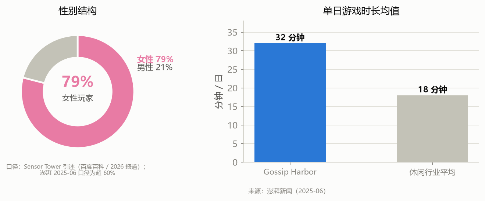
重要声明：本分层为基于 2.1 公开用户画像、社区评论关键词、自身游玩体验做出的运营视角推断，"留存 / 付费"等级为定性判断，非来自内部留存或付费数据。保留/付费的实际比例以发行方内部 BI 数据为准。
| 分层 | 留存/付费 | 行为特征 | 运营价值 |
|---|---|---|---|
| 剧情驱动核心用户 | 高/高 | 第一目标看故事，买体力、礼包推进主线，关注感情线与悬疑真相 | 收入支柱 |
| 装修收集型用户 | 中高/中低 | 重点体验餐厅改造与家具收集，乐于反复调整装饰，愿为外观礼包付费 | 长留存主力 |
| 合成玩法玩家 | 中/低 | 享受合并升级的爽感，对剧情无感，大多 0 氪、靠广告获取资源 | 广告收入基本盘 |
| 泛买量流入用户 | 低/低 | 被短视频狗血广告吸引下载，发现肝度高后快速流失 | 首日流失主要来源 |
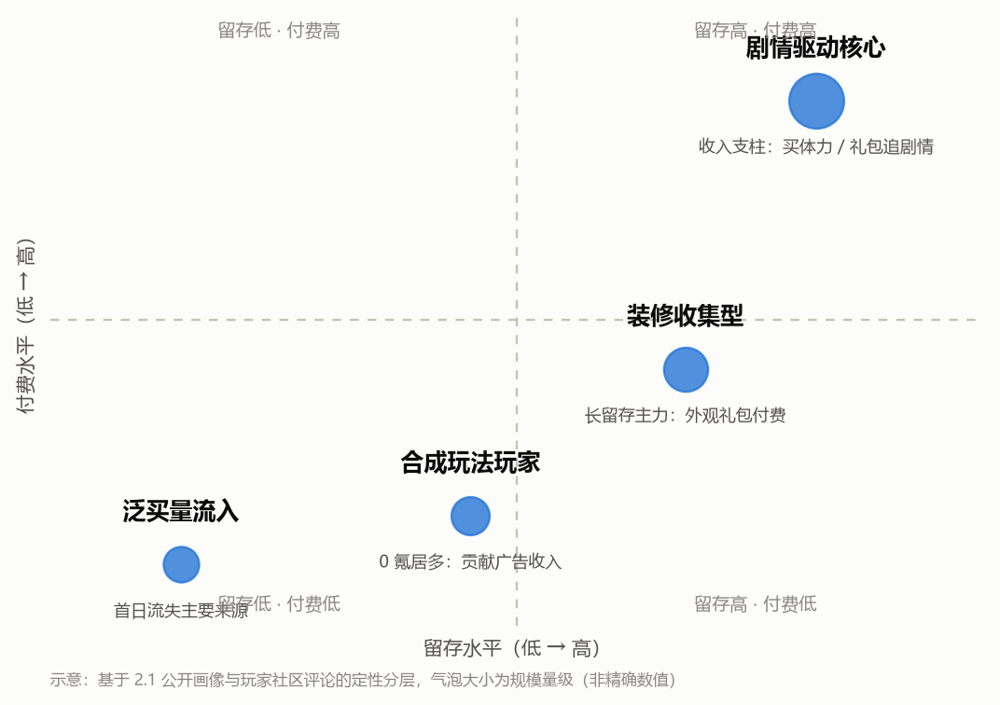
社区实证：r/GossipHarbor（约 1.4 万成员，作者 2026-07 通过 GummySearch 抓取近 30 天窗口快照）的高频讨论话题正是 Ice Cube（卡冰块）、Energy（体力）、Event（活动）槽，与上述痛点完全吻合；GummySearch 为单点瞬时数据，仅作定性参考。
消耗体力生成素材 → 两两合并合成高阶食材 → 完成顾客订单获取金币与线索 → 解锁餐厅装修、推进剧情 → 产生更高阶素材需求，循环往复。
三大模块并行：
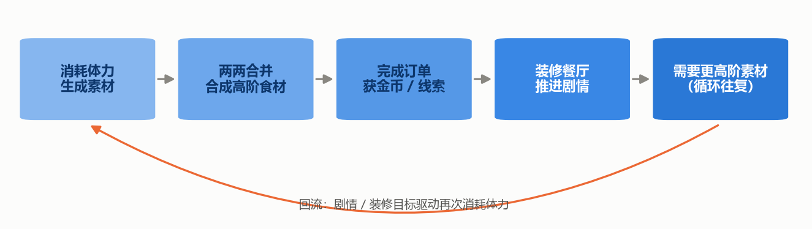
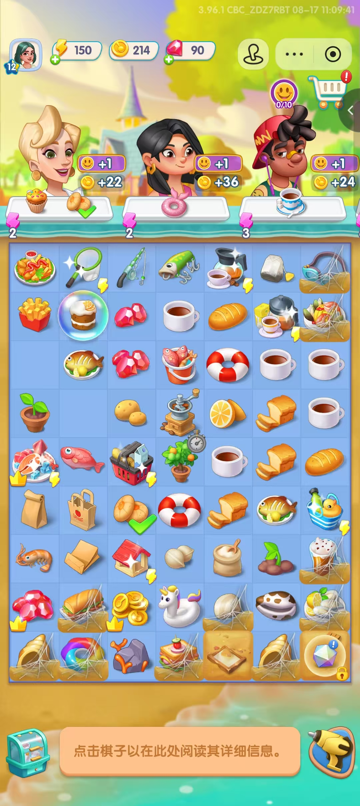
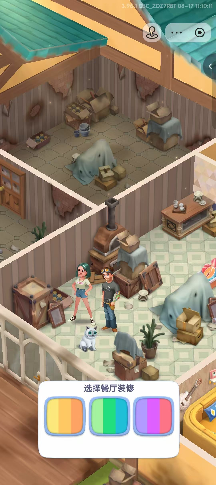
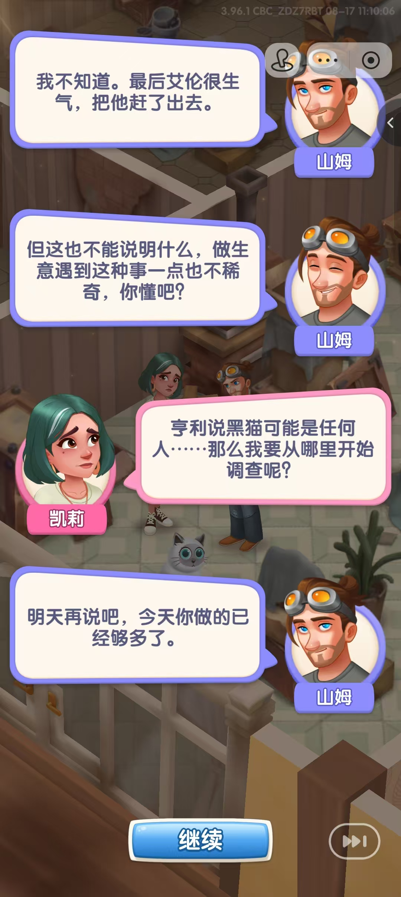
图 3-2：游戏内实机画面（作者 2026-07 实机游玩截图）——左：主界面（顶部 3 个顾客订单槽 + 中部合成棋盘；当前版本含测试包调试浮层，替换为正式服截图后效果更佳）；中：装修配色选择界面（餐厅破败态→选择主色）；右：剧情对话界面（凯莉与山姆关于"黑猫嫌疑人"的探案对白）
整体走小额高频付费路线，几乎没有国内重度手游的 648 大额档位，适配海外女性用户消费习惯：
付费驱动力：不是变强，而是跳过肝度——更快看到剧情、拿到限定外观。这个洞察解释了为什么 0 氪合成党同样有价值：他们贡献广告收入。
多线并行活动填补版本空窗、维持活跃度：
| 活动类型 | 定位 | 公开案例 |
|---|---|---|
| 周度剧情更新 | 最核心长线内容，驱动核心用户回流 | 每周五定时更新 |
| 限时剧情活动 | 大版本情绪峰值 | 2025-05 "The Lost City of Heron Keys"；2025-06 "The Masked Tenor"（Sensor Tower 月报点名） |
| 限时竞速竞赛 | 玩家比拼收集分数，拿限定家具、道具 | — |
| 赛季主题活动 | 集卡、掷骰子走格子，产出限定外观 | — |
| 日常订单循环 | 基础循环，保证每日轻度玩家有事可做 | — |
说明：以下数据来自不同三方机构，统计口径与覆盖范围存在差异，因此按"主体 × 时间 × 口径"分别列出，避免横向误读。柠檬微趣集团、Gossip Harbor 单产品、5 款合成矩阵三个口径不可混算。
| 时间 | 主体 | 数据 | 来源 / 口径 |
|---|---|---|---|
| 2025-05 | Gossip Harbor 单产品 | 海外月收入约 4240 万美元（约 3.0 亿元 RMB） | Sensor Tower 海外内购估算（仅 Gossip Harbor 单一产品） |
| 2025-05 | Gossip Harbor 单产品 | 全球月流水约 3600 万美元（约 2.6 亿元 RMB） | 那点事 2026-01 引述（与 Sensor Tower 存在口径差异，疑为内购纯流水 vs 总流水） |
| 2025 全年 | Gossip Harbor 单产品 | 出海收入榜第 2 名（排名较 2024 年提升 8 位），单产品收入同比 +242% | Sensor Tower 月报 |
| 2025 全年 | 柠檬微趣集团 | 集团收入规模约 5.4 亿美元，同比 +165% | 虎嗅 2026-02 引述（注：5.4 亿美元为集团口径，与 5 款合成矩阵 1.67 亿美元 H1 不可直接对比） |
| 2024 全年 | 柠檬微趣集团 | 全产品累计内购流水 36 亿元 RMB（约 5.0 亿美元），同比 +200% | Sensor Tower 估算（2024 vs 2023 增长率） |
| 2024-12 | 柠檬微趣集团 | 单月内购流水 超 5 亿元 RMB | Sensor Tower 估算 |
| 2025H1 | 柠檬微趣 5 款合成矩阵 | 合计营收 1.67 亿美元（约 12 亿元 RMB）、下载 850 万次 | Sensor Tower 估算（注：5 款矩阵合计 ≠ Gossip Harbor 单产品，亦 ≠ 集团总收入） |
| 2026 媒体报道 | 柠檬微趣集团 | 年收入规模 超 6 亿美元 | 媒体报道 2026-07（具体统计周期未明确，引用时建议谨慎） |
对比竞品：超越老牌合成竞品《Merge Mansion》《Travel Town》，成为 Merge-2 品类全球收入头部产品（Sensor Tower 月报）。
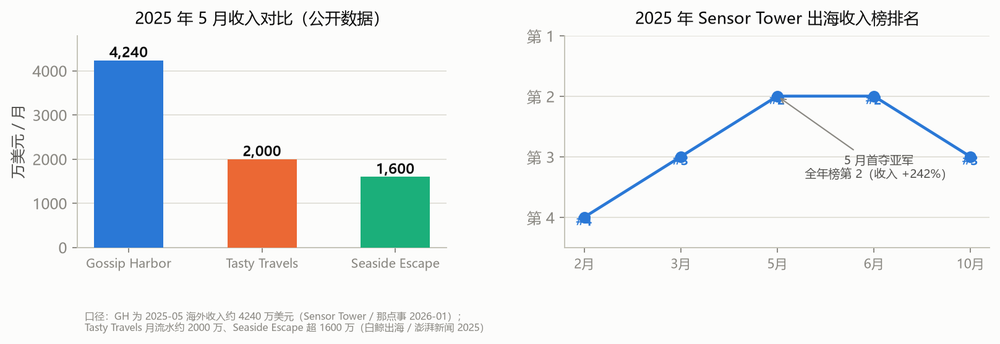
综上，公开三方数据可支撑的方向性结论：Gossip Harbor 与柠檬微趣在 Merge-2 赛道处于头部位置，剧情驱动的产品策略已被市场验证；剧情 + 装修是核心留存与付费动力；社区端存在"剧情讨论"的明显运营空白。下一章将基于上述方向性判断，给出可落地的运营方案与监控框架。
数据局限性声明：休闲游戏内部留存、LTV、付费渗透率等核心数据不对外公开，本章复盘的所有指标均来自 Sensor Tower、AppMagic、DataEye、虎嗅、白鲸出海、36 氪、澎湃新闻等公开来源；具体数值的真实分布以发行方内部 BI 数据为准。
方案立场：站在游戏运营（海外发行方向）岗视角，不做策划大改玩法，用运营手段放大产品已有的两大核心资产——剧情情绪价值与装修收集乐趣。
主线：把"想知道剧情还能有多离谱"这个用户情绪，从买量素材一路贯穿到游戏内活动与社区讨论，形成"广告钩子 → 游戏内剧情 → 社区讨论 → 二创回流"的闭环。
"情绪营销"操作定义：在本方案中，情绪营销 = 以剧情钩子激发用户情感反应（好奇、共情、期待、争议），并通过内容、活动、社区运营将其转化为留存、付费与自发传播行为。核心不是"卖功能"，而是"卖情绪延续的可能"——把产品内置的剧情资产，当作可持续输出的内容燃料。
四个环节的现状与打法：
| 环节 | 现状 | 我的打法 |
|---|---|---|
| 买量 | 1 万组短剧素材已验证吸量 | 按剧情章节做素材系列化，预告式投放（"下周五，凯莉发现……"） |
| 游戏内 | 周更剧情已建立回流习惯 | 用活动日历填满空窗期（见 5.3） |
| 社区 | Facebook 互动帖勤，但剧情话题空白 | 官方下场引导剧情讨论（见 5.2） |
| 二创 | 玩家自发产出少 | 创作者合作计划，把情绪变成 UGC |
依据：r/GossipHarbor 1.4 万成员、半年 +101.5% 增长，但"The story"标签仅 4 帖——社区有流量、没引导。
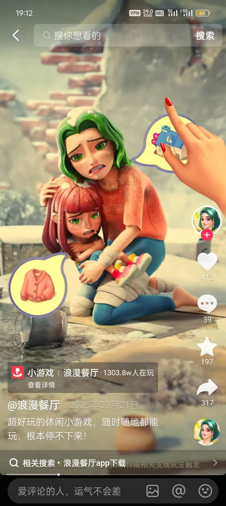
案例拆解：连续 7 天"剧情猜想"话题活动（从 0 到 1 示意）
| 阶段 | 动作 | 衡量指标 |
|---|---|---|
| D-3 预热 | 官方三平台发布"下周五剧情走向"悬念预告 + 三选一投票 | 投票参与量、社交曝光量 |
| D0 更新 | 剧情上线，同步发布"剧情讨论帖"承接讨论，置顶猜中名单 | 帖子互动率（评论 / 分享） |
| D1–D2 发酵 | 向预测命中玩家私信体力礼包码，引导晒"命中截图" | 礼包码兑换率、UGC 二创量 |
| D3 复盘 | 发布"官方剧透 vs 玩家猜想"对比卡，埋下一轮期待钩子 | 活动期回流用户数（更新后 24h） |
目标与迭代判断（示意，待入职后以真实数据校准）：首期目标为"The story"标签帖子数从约 4 帖提升至 15+ 帖、话题投票参与量达到社区周活的一定比例；若命中投票参与率持续高于阈值，则将该活动固化为每周固定栏目，并联动游戏内推送做预告召回。
设计原则：剧情周更是心跳，空窗期活动是缓冲垫，赛季活动是情绪峰值，节日节点借势放大。
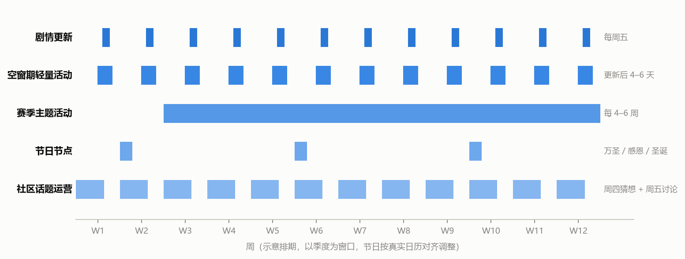
| 用户层 | 触达渠道 | 运营动作 | 目标 |
|---|---|---|---|
| 剧情党 | 游戏内推送 + 社群 | 更新预告、剧情猜想话题、剧情加速包 | 回流率、付费 |
| 装修党 | IG / TikTok 视觉内容 | 装修主题赛、限定外观预告、布局灵感帖 | 参与率、留存 |
| 合成党 | 游戏内活动 | 合成竞赛、体力福利，鼓励看广告 | 广告收入、活跃 |
| 泛买量用户 | 首日体验优化（与产品侧联动） | 降低前 10 分钟肝度感知的引导话术、首日剧情钩子前置 | 次留 |
本节是 4.4 "如果我是运营，我会盯什么" 的具体落地表，对应 5.5 周报框架的指标明细。所有指标均需建立在内部 BI 数据权限之上；公开三方数据仅用于外部对标，不替代内部埋点。
| 类别 | 指标 | 关注动作 |
|---|---|---|
| 版本节点 | 剧情更新前后 DAU、回流用户数 | 评估剧情内容质量与预告运营效果 |
| 活动指标 | 限时活动参与率、活动礼包付费转化 | 校准活动难度与奖励结构 |
| 舆情监控 | 社区高频吐槽关键词（体力、概率、剧情） | 周维度舆情简报，同步产品侧 |
| 流失相关 | 卡高阶物品的用户流失占比 | 识别卡点，联动活动侧投放补偿 |
| 社媒侧 | 剧情相关内容曝光、讨论量 | 评估情绪营销内容效果 |
| 买量侧 | 素材消耗、CTR、次留（与投放团队对齐） | 剧情素材的生命周期管理 |
《浪漫餐厅》的成功内核，是把叙事 meta 玩法与成熟 Merge-2 玩法深度结合，精准抓住欧美女性用户的情绪需求，并用"周更剧情 + 高频活动"的工业化内容产能维持长线生命力。产品当前面临中后期肝度、概率卡进度、剧情空窗期等运营风险点。
从这份拆解中，我提炼出对游戏运营岗位的三条方法论：